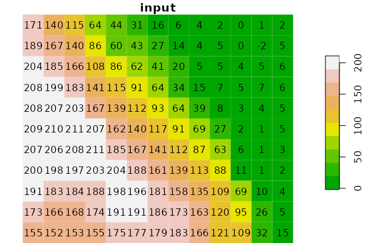
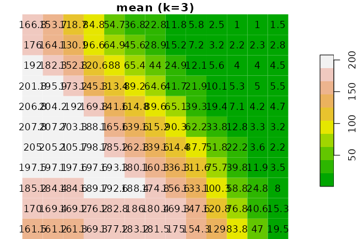
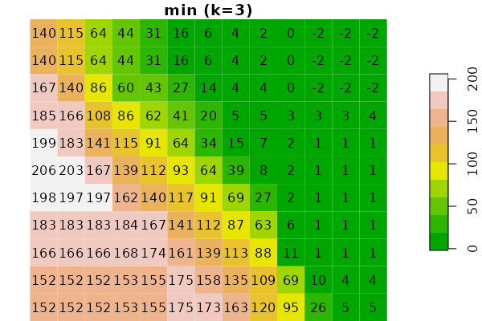
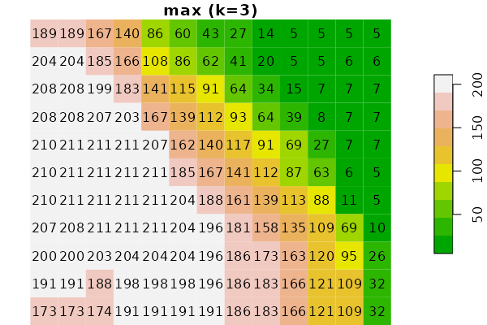
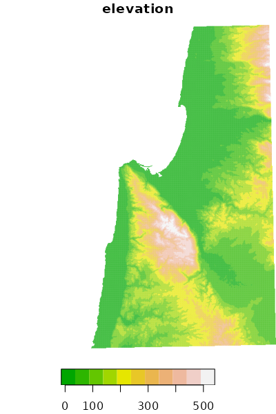
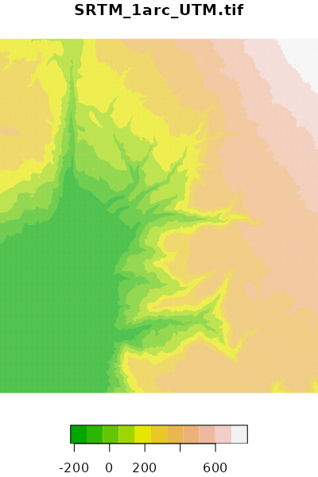

Package starsExtra
R package starsExtra provides several miscellaneous
functions for working with stars objects, mainly
single-band rasters. Currently includes functions for:
- Focal filtering
- Detrending of Digital Elevation Models
- Calculating flow length
- Calculating the Convergence Index
- Calculating topographic slope
- Calculating topographic aspect
Installation
CRAN version:
install.packages("starsExtra")GitHub version:
install.packages("remotes")
remotes::install_github("michaeldorman/starsExtra")Usage
Once installed, the library can be loaded as follows:
library(starsExtra)
#> Loading required package: sf
#> Linking to GEOS 3.10.2, GDAL 3.4.1, PROJ 8.2.1; sf_use_s2() is TRUE
#> Loading required package: stars
#> Loading required package: abindExamples
Focal filter: aggregation functions
data(dem)
dem_mean3 = focal2(dem, matrix(1, 3, 3), "mean", na.rm = TRUE)
dem_sum3 = focal2(dem, matrix(1, 3, 3), "sum", na.rm = TRUE)
dem_min3 = focal2(dem, matrix(1, 3, 3), "min", na.rm = TRUE)
dem_max3 = focal2(dem, matrix(1, 3, 3), "max", na.rm = TRUE)
plot(dem, main = "input", text_values = TRUE, breaks = "equal", col = terrain.colors(10))
plot(dem, col = rep(NA, 3), key.pos = NULL, main = "")
plot(round(dem_mean3, 1), main = "mean (k=3)", text_values = TRUE, breaks = "equal", col = terrain.colors(10))
plot(dem_sum3, main = "sum (k=3)", text_values = TRUE, breaks = "equal", col = terrain.colors(10))
plot(dem_min3, main = "min (k=3)", text_values = TRUE, breaks = "equal", col = terrain.colors(10))
plot(dem_max3, main = "max (k=3)", text_values = TRUE, breaks = "equal", col = terrain.colors(10))
Focal filter: window size
data(carmel)
carmel_mean9 = focal2(carmel, matrix(1, 9, 9), "mean", na.rm = TRUE, mask = TRUE)
carmel_mean27 = focal2(carmel, matrix(1, 27, 27), "mean", na.rm = TRUE, mask = TRUE)
plot(carmel, main = "input", breaks = "equal", col = terrain.colors(10))
plot(carmel_mean9, main = "mean (k=9)", breaks = "equal", col = terrain.colors(10))
plot(carmel_mean27, main = "mean (k=27)", breaks = "equal", col = terrain.colors(10))Topographic slope
plot(carmel, breaks = "equal", col = terrain.colors(11))
plot(carmel_slope, breaks = "equal", col = hcl.colors(11, "Spectral"))
Topographic aspect
plot(carmel, breaks = "equal", col = terrain.colors(11))
plot(carmel_aspect, breaks = "equal", col = hcl.colors(11, "Spectral"))
Convergence Index
plot(golan, breaks = "equal", col = terrain.colors(11))
plot(golan_asp, breaks = "equal", col = hcl.colors(11, "Spectral"))
plot(golan_ci, breaks = "equal", col = hcl.colors(11, "Spectral"))